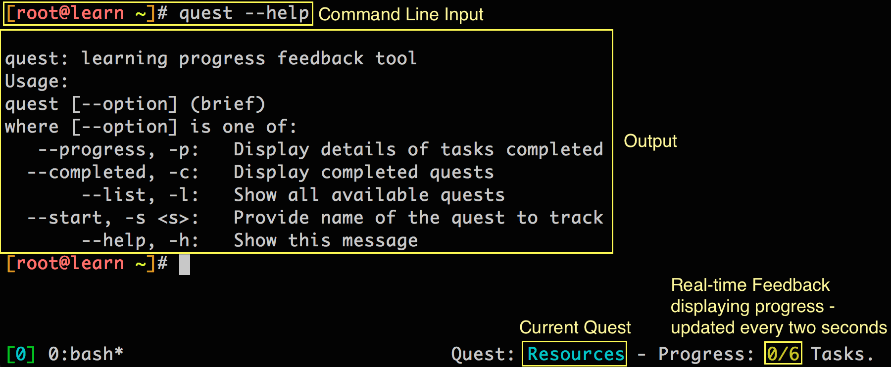

Welcome
Quest Objectives
- Learn about the value of Puppet and Puppet Enterprise
- Familiarize yourself with the Quest structure and tool
The Learning VM
Any sufficiently advanced technology is indistinguishable from magic.
-Arthur C. Clarke
Welcome to the Quest Guide for the Learning Virtual Machine. This guide will be your companion as you make your way through a series of interactive quests on the accompanying VM. This first quest serves as an introduction to Puppet and gives you an overview of the quest structure and the integrated quest tool. We've done our best to keep it short so you can get on to the meatier stuff in the quests that follow.
You should have started up the VM by now, and have an open SSH session from your terminal or SSH client.
If you need to, return to the Setup section and review the instructions to get caught up. Remember, the credentials to log in to the Learning VM via SSH are:
- username: root
- password: puppet
If you're comfortable in a Unix command-line environment, feel free to take a look around and get a feel for what you're working with.
Getting Started
The Learning VM includes a quest tool that will provide structure and feedback as you progress. You'll learn more about this tool below, but for now, type the following command to start your first quest: the "Welcome" quest.
quest --start welcome
What is Puppet?
So what is Puppet, and why should you take the time to learn it?
Puppet is an open-source IT automation tool. The Puppet Domain Specific Language (DSL) is a Ruby-based coding language that provides a precise and adaptable way to describe a desired state for each machine in your infrastructure. Once you've described a desired state, Puppet does the work to bring your systems in line and keeping them there.
The easy-to-read syntax of Puppet's DSL gives you an operating-system-independent language to specify which packages should be installed, what services you want running, which users accounts you need, how permissions are set, and just about any other detail of a system you might want to manage. If you're the DIY type or have unique needs, you can write the Puppet code to do all these things from scratch. But if you'd rather not re-invent the wheel, a wide variety of pre-made Puppet modules let you get the setup you're looking for without churning out the code yourself.
And what's the 'Enterprise' part?
Puppet Enterprise (PE) is a complete configuration management platform, with an optimized set of components proven to work well together. It combines a version of open source Puppet (including a preconfigured production-grade Puppet master stack), with MCollective, PuppetDB, Hiera, and more than 40 other open source projects that Puppet Labs has integrated, certified, performance-tuned, and security-hardened to make a complete solution for automating mission-critical enterprise infrastructure.
In addition to these integrated open source projects, PE has many of its own features, including a graphical web interface for analyzing reports and controlling your infrastructure, orchestration features to keep your applications running smoothly as you coordinate updates and maintenance, event inspection, role-based access control, certification management, and cloud provisioning tools.
Task 1 :
Now that you know what Puppet and Puppet Enterprise are, check and see what versions of are running on this Learning VM. Type the following command:
puppet -V # That's a capital 'V'
You will see something like the following:
3.4.3 (Puppet Enterprise 3.2.2)
This indicates that Puppet Version 3.4.3 Puppet Enterprise 3.2.2 are installed.
But why learn something new?
Why not just run a few shell commands or write a script? If you're comfortable with shell scripting and concerned with a few changes on a few machines, this may indeed be simpler. The appeal of Puppet is that allows you to describe all the details of a configuration in a way that abstracts away from operating system specifics, then manage those configurations on as many machines as you like. It lets you control your whole infrastructure (think hundreds or thousands of nodes) in a way that is simpler to maintain, understand, and audit than a collection of complicated scripts.
What is a Quest?
At this point we've introduced you to the Learning VM and Puppet. You'll get your hands on Puppet soon enough. But first, what's a quest? This guide contains collection structured tutorials that we call quests. Each quest includes interactive tasks that give you a chance to try things out yourself.
If you executed the puppet -V command earlier, you've already completed your first task. (If not, go ahead and do so now.)
The Quest Tool
The Learning VM includes a quest tool that will help you keep track of which quests and tasks you've completed successfully and which are still pending. We've written a couple of tasks in this quest to demonstrate the features of the quest tool itself.
The VM comes with several adjustments to enable the use of the quest tool and progress tracking, including changes to how bash is configured. Please don't replace the .bashrc file, instead append your changes.
Task 2 :
To explore the command options for the quest tool, type the following command:
quest --help
The quest --help command provides you with a list of all the options for the quest command. You can invoke the quest command with each of those options, such as:
quest --progress # Displays details of tasks completed
quest --completed # Displays completed quests
quest --list # Shows all available quests
quest --start <name> # Provide the name of a quest to start tracking progress
Task 3 :
Find out how much progress you have made so far:
quest --progress
Typing `clear` into your terminal will remove everything on your terminal screen.
While you can use the quest commands to find more detailed information about your progress through the quests, you can check the quest status display at the bottom right of your terminal window to keep up with your progress in real time.

Figure
Review
In this introductory quest we gave a brief overview of what Puppet is and the advantages of using Puppet to define and maintain the state of your infrastructure.
We also introduced the concept of the quest and interactive task. You tried out the quest tool and reviewed the mechanics completing quests and tasks.
Now that you know what Puppet and Puppet Enterprise are, and how to use the quest tool, you're ready to move on to the next quest: The Power of Puppet.